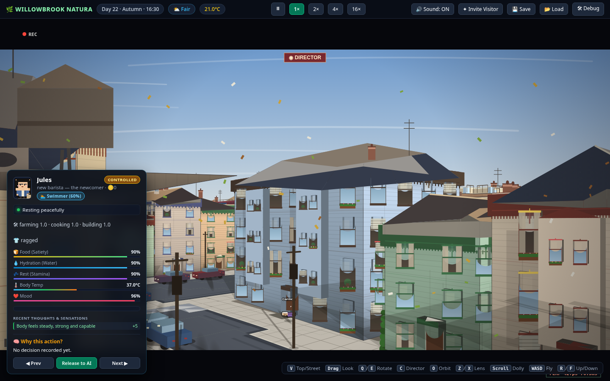
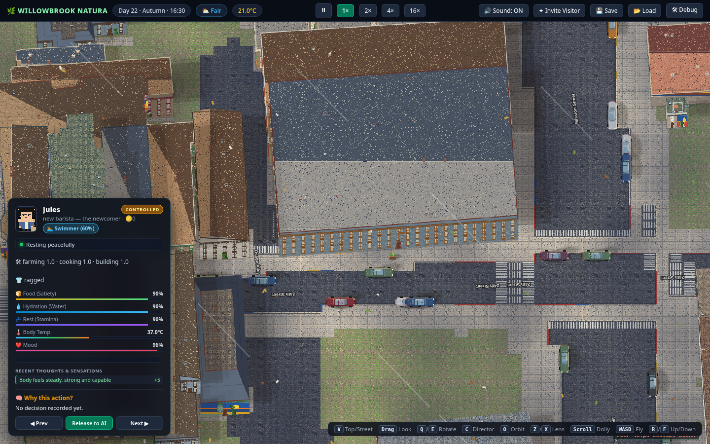
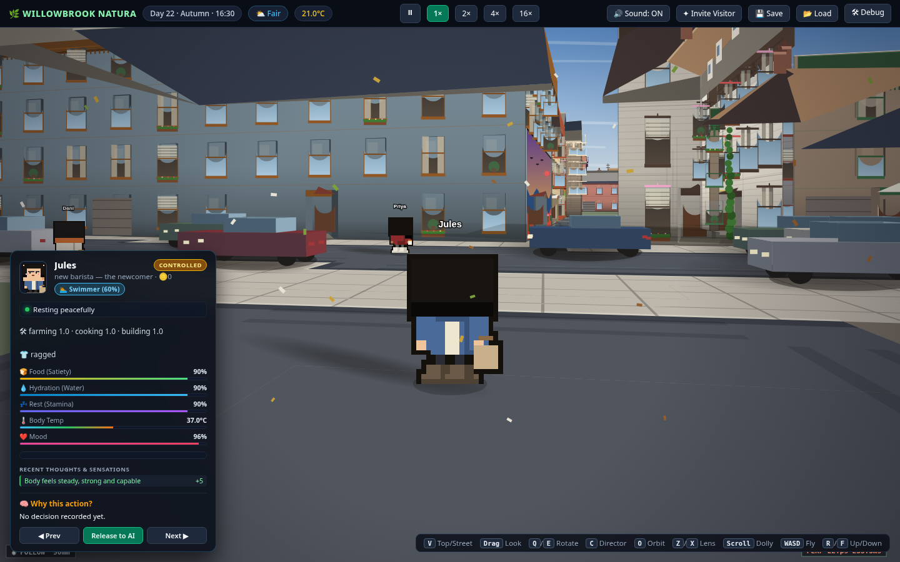
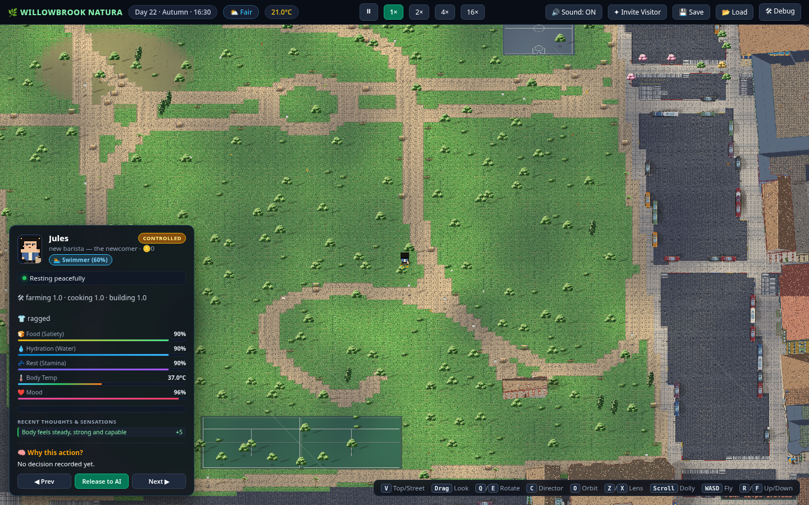
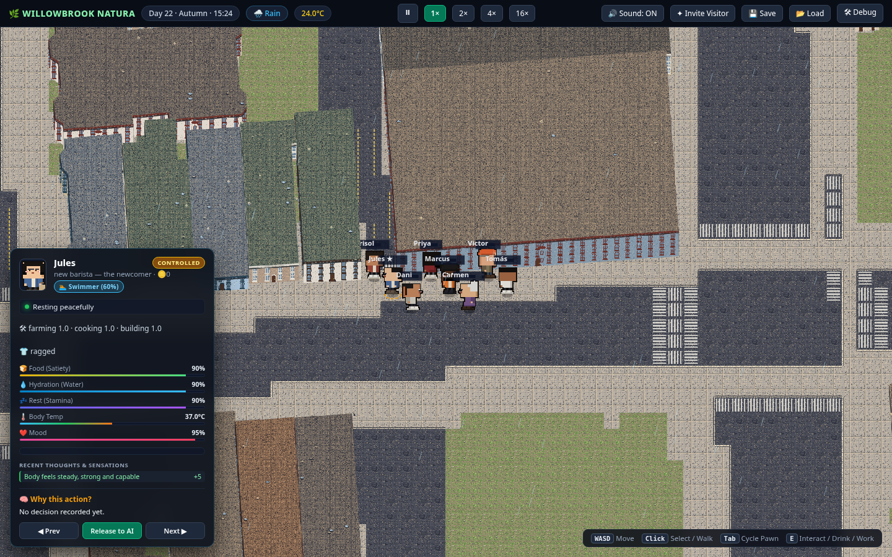
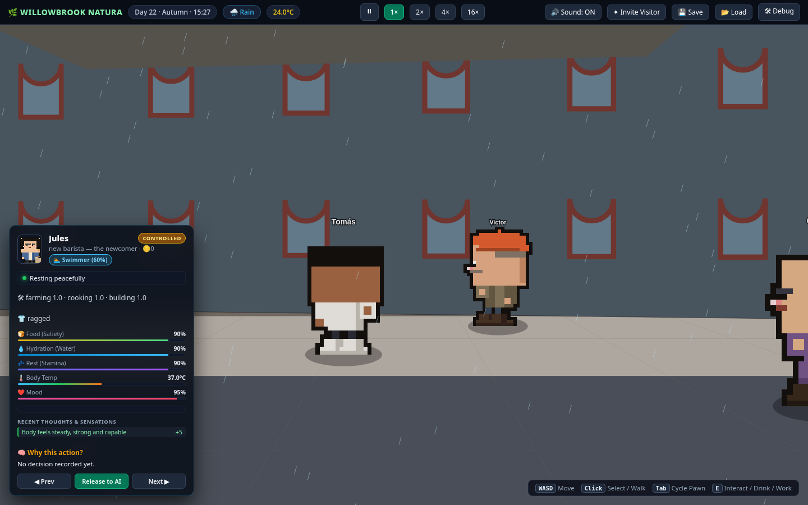

A neighborhood that's alive whether you're watching or not.
Real World is a persistent life simulation set on real streets around Dolores Park, in San Francisco's Mission District. Twenty-eight fictional residents live, work, fall out, and make up — around the clock, on AI. Watching costs nothing. Reaching in is what you pay for.

Director-mode view over the block. Pre-release development build; interface shown is a placeholder.
The premise
The Truman Show you can visit.
Eight main characters — baristas, a nurse, a courier, a cook, a seamstress, a hardware-store landlord — run on full AI minds with memory, jobs, relationships, and secrets of their own. Twenty more neighbors fill the sidewalks on lightweight AI. All of them are fictional; the streets, the park, and the skyline are real San Francisco.
The core rule of the show: the cast can never be possessed. Not by other players, not by us. Their stories stay their own — that's what makes the world real enough to care about.
Watching is the free heart of the game: follow a resident, read the public feed, piece together who's feuding with whom. When you want to do more than watch, you don't buy the world — you buy a moment inside it, through a request: a declared action with a declared duration, priced upfront, capped hard, and visible to everyone.
Or go further: create a character of your own, rent a room, take a job, and climb the oldest ladder the Mission has — tenant, owner, landlord.
How it works
Watch free. Buy a moment. Or move in.
Watch
Open the neighborhood and look in. Follow any resident, read the public request feed, learn the block. Observation never costs anything.
Request
File a time-boxed request — possess your own character, call for rain, nudge an event. The system prices it upfront, enforces a hard cap, and posts it on the public feed.
Move in
Create a character, sign a lease in game dollars, work a job. Save up, buy a place, rent out a second unit. The sim doesn't exempt you — that's the point.
Screenshots
The block, as it looks today.
Real captures from the current development build (top-down, follow-cam, director, and interior vignettes) — plus two shots from the first art pass for contrast. Interface elements are placeholder.







What we're not
Said plainly, because the world runs on trust.
No loot boxes
Everything you can buy is a direct purchase with a visible price. No odds, no gacha, no surprise mechanics.
No cash-out
Credits buy agency in the world — they're not transferable, not redeemable, never convertible back to money. The economy is a game, not an exchange.
No voice lines
Characters think and speak in text. Every word stays loggable — part of how the world stays moderated and honest.
The block is being built. The door will open.
Real World is in active development. Everything on this site describes the locked design — nothing here is vaporware we haven't specced, and nothing is promised that isn't in the build plan.